Figuur 1: Ons sien alles rondom ons in perspektief.
Figuur 2: Waar is die verdwynpunt van elke blok?
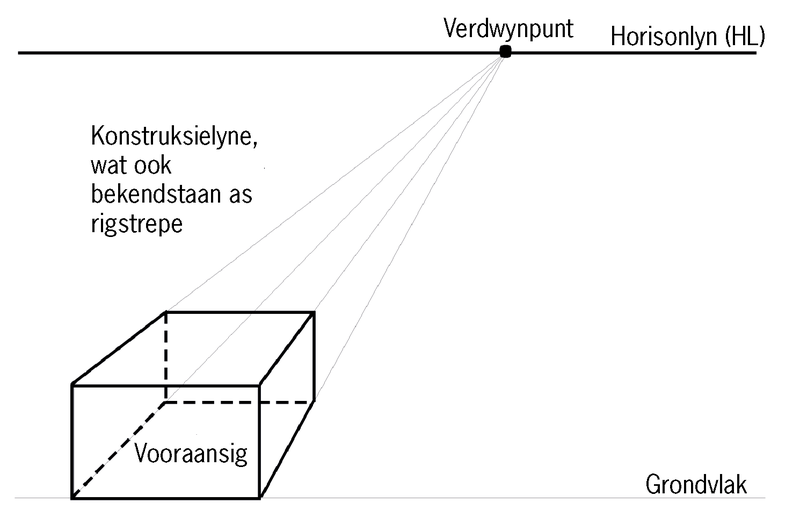Figuur 3
Om ’n dubbel verdwynpunt perspektieftekening van ’n blok te maak kan jy
begin deur ’n horisonlyn en een vertikale rand van die blok te teken,
soos wat
hieronder gewys word.
Trek dan konstruksielyne van
die bopunt en onderpunt van die vertikale
rand na twee verdwynpunte op die horisonlyn.
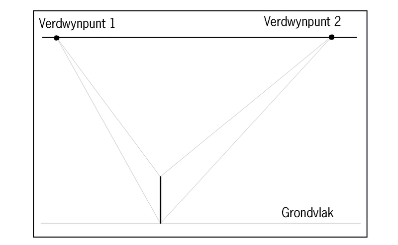Figuur 4
Sodra jy dit gedoen het, moet jy nog ’n rand van die blok afmerk op die
konstruksielyne, soos wat in figuur 5 by A en B gewys word.
Vanaf punt A en B,
trek kontruksielyne na verdwynpunt 2.
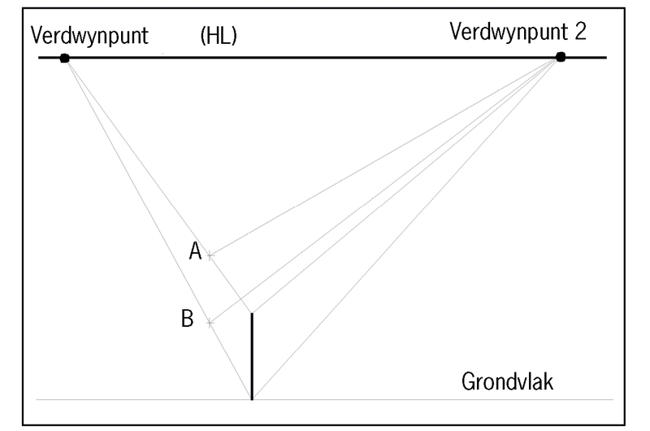Figuur 5
Merk nou, soos wat in figuur 6 gewys word, by C en D ’n ander rand van die
blok af op die konstruksielyne wat na verdwynpunt 2 loop.
Trek konstruksielyne van punt C
en D na verdwynpunt 1.
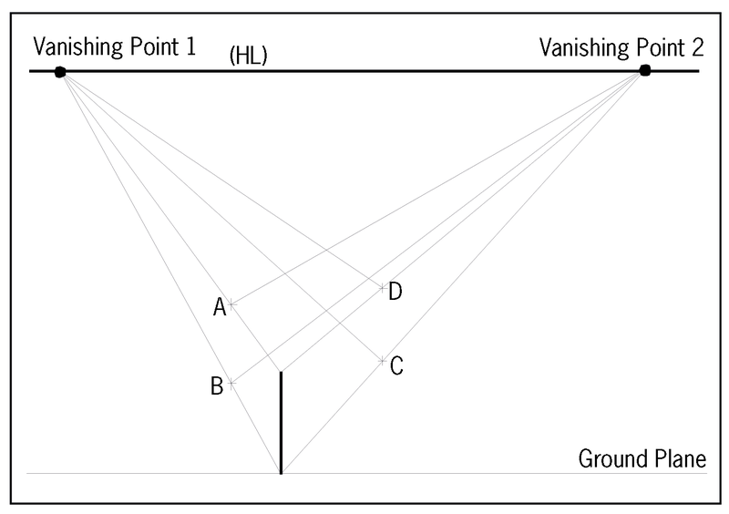Figuur 6
Maak jou eie
perspektieftekening met ’n dubbel verdwynpunt van ’n blok
hieronder. Trek soliede lyne in, soos wat aangedui word op die bloktekening op
bladsy 46.
Figuur 7
Dit is beter om die blok eers,
soos hieronder gewys word, sonder die uitgesnyde
stuk te teken.
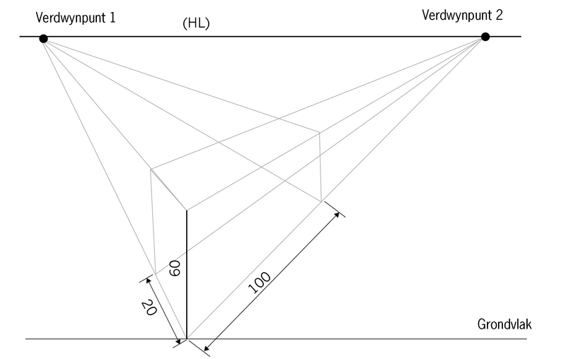
Figuur 8
Merk dan die uitgesnyde stuk
soos wat hieronder gewys word.
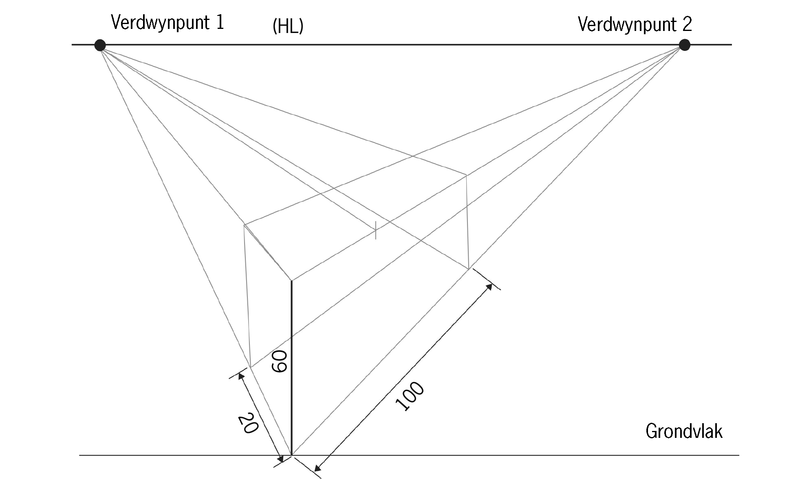
Figuur 9
Maak en voltooi jou
eie perspektieftekening met ’n dubbel verdwynpunt van die
voorwerp in figuur 7. Waar nodig, teken soliede lyne in.
perspektief
gebruik maak om
die prent meer lewensgetrou of werklik te laat lyk. As jy jou prent in
perspektief
geteken het, kan jy dit selfs beter laat lyk deur beskaduwing
te gebruik.
driedimensionele
vorm, in plaas
van ’n
tweedimensionele
vorm is.
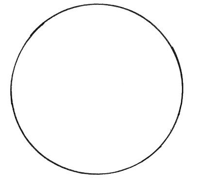
Figuur 10a: ’n Sirkel (tweedimensioneel)
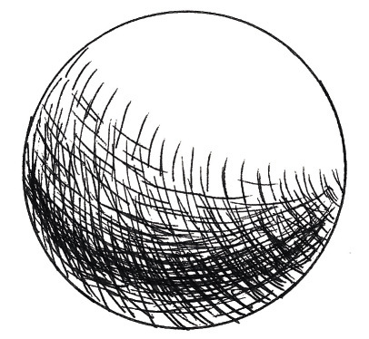
Figuur 10b: ’n Sfeer (driedimensioneel)Figuur 11: Die posisie van die lig wat op elke kubus skyn, bepaal
watter dele ligter of donkerder sal wees.
Die posisie van die lig op hierdie kubusse word deur die rooi pyle aangedui.
Figuur 12: Verskillende skaduwees wat deur arsering geskep word
Figuur 13: Verskillende skaduwees wat deur kruisarsering
geskep word
In plaas daarvan om
lyne te trek, kan jy jou pen, potlood of enige ander stuk
tekengereedskap gebruik om stippels te maak vir beskaduwing. Hoe nader die
stippels aanmekaar is, hoe donkerder sal die skadu wees.
Figuur 14: Verskillende skaduwees deur stippels geskep
Figuur 15: Verskillende skaduwees wat geskep is deur inklae en ’n
kwas
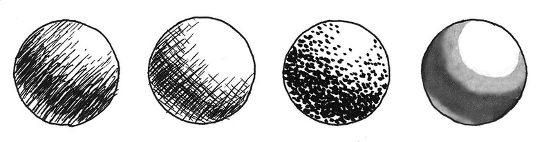Figuur 16: ’n Sfeer
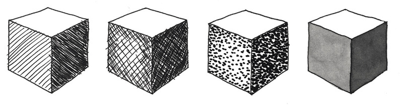Figuur 17: ’n Kubus
Figuur 18: ’n Silinder
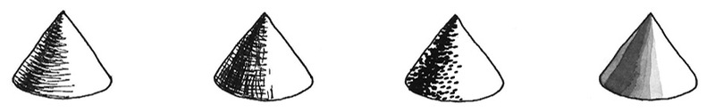
Figuur 19: ’n Keël
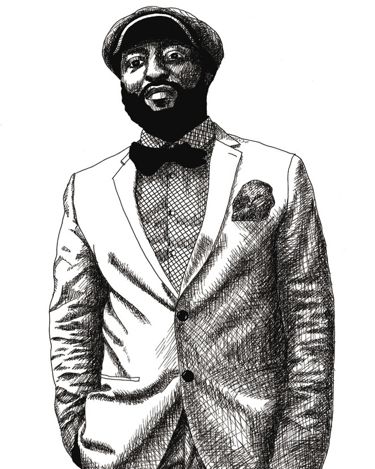
Figuur 20: Portret van ’n man in ’n pak klere
Gebruik een van die
beskaduwingstegnieke waarvan julle geleer het en skep vyf
verskillende skadu’s in die blok hieronder.
Figuur 21 is ’n
tekening wat uit lyne
en beskaduwing bestaan. Dit wys ’n
boom, huis en motor wat deur die
kombinasie van verskillende basiese
vorms geteken is.
Beskadu die kopie van
hierdie tekening in die spasie
hieronder. Gebruik enige van die
beskaduwingstegnieke waarvan jy in
hierdie hoofstuk geleer het.